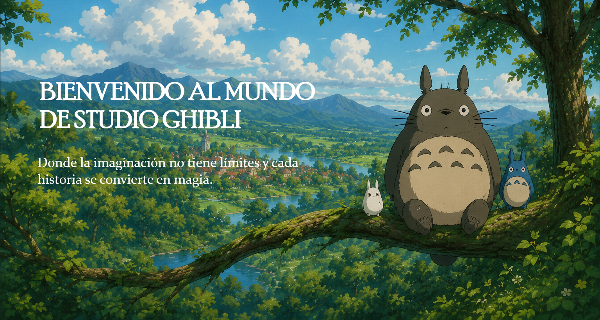

¿QUÉ ES STUDIO GHIBLI?
Studio Ghibli es un reconocido estudio de animación japonés fundado en 1985 por Hayao
Miyazaki, Isao Takahata y Toshio Suzuki. Sus películas se caracterizan por combinar fantasía, naturaleza,
emoción y
enseñanzas profundas a través de historias inolvidables y personajes únicos. Más que simples películas
animadas, las obras de Ghibli transmiten valores como: la amistad, el respeto por la naturaleza, la
valentía, la importancia de crecer, y la belleza de las pequeñas cosas de la vida. Cada película invita
a descubrir mundos mágicos llenos de detalles, emociones y aventuras que dejanenseñanzas tanto para niños
como para adultos.
Lo que las peliculas nos transmiten
- El respeto por la naturaleza:
Muchas películas de Studio Ghibli enseñan la importancia de
cuidar
y respetar el medio ambiente. En historias como La princesa Mononoke o Mi vecino Totoro, la
naturaleza no aparece solo como un paisaje, sino como algo vivo y valioso que debe protegerse.
Los bosques, los animales y los espíritus representan el equilibrio entre los seres humanos y el
mundo natural. A través de estas historias, Studio Ghibli muestra cómo la ambición y el abuso de
los recursos pueden destruir ese equilibrio. Sin embargo, también enseña que las personas pueden
convivir con la naturaleza de manera más armoniosa y consciente. Las películas invitan a
apreciar las pequeñas cosas del entorno, valorar la vida natural y reflexionar sobre el impacto
de nuestras acciones en el planeta.
- La importancia de crecer y enfrentar los miedos:
Uno de los mensajes más presentes en las
películas de Studio Ghibli es el crecimiento personal. Personajes como Chihiro Ogino o Kiki
comienzan sus historias siendo inseguros, tímidos o dependientes, pero poco a poco aprenden a
confiar en sí mismos y superar las dificultades. Estas películas muestran que crecer no
significa dejar de sentir miedo, sino aprender a enfrentarlo con valentía. Los personajes
atraviesan momentos difíciles, se equivocan, dudan y cambian emocionalmente durante sus
aventuras. Gracias a eso, las historias resultan muy humanas y cercanas, transmitiendo la idea
de que todas las personas pueden aprender, madurar y fortalecerse con el tiempo.
- El valor de la empatía y la bondad:
Las películas de Studio Ghibli enseñan constantemente
la
importancia de tratar a los demás con empatía, comprensión y amabilidad. Incluso los personajes
que parecen extraños, peligrosos o solitarios suelen tener sentimientos profundos y una historia
detrás de su comportamiento. Un ejemplo muy claro es Sin Rostro, quien cambia completamente
dependiendo de cómo las personas lo tratan. Studio Ghibli evita crear personajes totalmente
buenos o malos, mostrando que todos tienen emociones, miedos y conflictos internos. Esto ayuda a
comprender que escuchar, ayudar y ser amable con los demás puede cambiar muchas situaciones. Las
películas transmiten la idea de que la bondad y la empatía son capaces de crear conexiones
importantes y mejorar la vida de las personas.
- La belleza de las pequeñas cosas de la vida:
A diferencia de muchas películas llenas de
acción
constante, Studio Ghibli suele darle importancia a momentos simples y cotidianos. Escenas como
caminar bajo la lluvia, cocinar, viajar en tren o contemplar un paisaje tienen un significado
especial dentro de sus historias. Películas como Mi vecino Totoro muestran cómo la felicidad
puede encontrarse en momentos tranquilos y sencillos. Este estilo enseña a apreciar el presente,
disfrutar de la calma y encontrar belleza en detalles que muchas veces pasan desapercibidos. Las
películas transmiten una sensación de tranquilidad y nostalgia que conecta emocionalmente con el
espectador, recordando que no siempre hacen falta grandes acontecimientos para vivir
experiencias importantes y memorables.
PELICULAS DESTACADAS